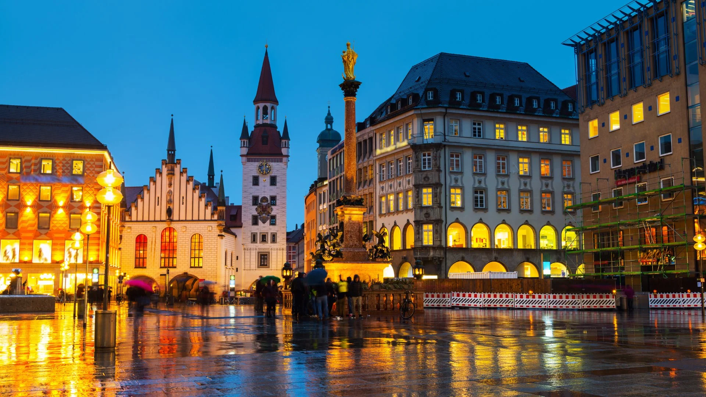

ПОНУДА ЦЕЛА ГОДИНА

МИНХЕН И БАВАРИЈА
Минхен, Германија
15.10 - 20.10
Откријте го прекрасниот Минхен и шармантната Баварија, регион познат по својата богата историја, традиционална архитектура и прекрасни пејзажи. Прошетајте низ историскиот центар на Минхен, посетете величествени замоци и уживајте во автентичната баварска атмосфера. Совршена понуда за кратко европско патување во текот на целата година.
ЕВРОПСКА АВАНТУРА
Главниот град на Баварија и еден од најпознатите германски градови, препознатлив по богатата историја, прекрасната архитектура и традиционалната баварска атмосфера. Центарот на градот е исполнет со историски градби, плоштади и живописни улици, а особено се издвојува Мариенплац со прочуената Нова градска куќа. Минхен нуди одлична комбинација на култура, историја, шопинг, кафулиња и ресторани.
Еден од највпечатливите дворци во Баварија, познат како поранешна летна резиденција на баварските владетели. Дворецот се одликува со раскошна архитектура, историски ентериери и прекрасен комплекс од пространи градини и паркови. Прошетката низ Нимфенбург овозможува уживање во аристократската атмосфера и запознавање со богатото баварско наследство.
Прекрасен планински регион познат по величествените алпски врвови, зелените долини, езерата и живописните природни предели. Областа нуди спектакуларни панорамски погледи и совршена можност за уживање во чистата природа и традиционалниот планински амбиент. Баварските Алпи се едни од најубавите природни предели во јужна Германија.
Еден од најпознатите и најпрепознатливи замоци во Германија, сместен високо меѓу живописните баварски планини. Замокот е познат по својата бајковита архитектура и спектакуларната положба, која нуди прекрасни погледи кон околните планини, долини и езера. Нојшванштајн е една од највпечатливите знаменитости на Баварија и место кое остава незаборавен впечаток.
Состанок со групата на аеродром во Скопје, 2 часа пред летот. Следува диретен лет до Минхен и пристигнување на аеродромот. По завршувањето на аеродромските процедури следува организиран трансфер до хотелот и сместување. По сместувањето следува време за одмор и освежување. Попладнето е предвидено за прва прошетка низ околината и запознавање со Минхен. Вечерта е слободна за вечера и индивидуални активности. Ноќевање во хотел.
Појадок во хотелот и организирано разгледување на Минхен. Следува прошетка низ историскиот центар и посета на плоштадот Мариенплац, со разгледување на главните знаменитости и познатите градски улици. Патниците ќе имаат можност за фотографирање и запознавање со баварската архитектура и атмосфера. Потоа е предвидено слободно време за ручек, кафе, шопинг и индивидуално разгледување. Вечерта е слободна за одмор и индивидуални активности. Ноќевање во хотел.
Појадок во хотелот и организирана посета на дворецот Нимфенбург. Следува разгледување на прекрасниот дворец, поранешна летна резиденција на баварските владетели, како и прошетка низ неговите големи градини. Патниците ќе имаат време за фотографирање и уживање во историската атмосфера. По посетата следува слободно време за ручек и индивидуални активности. Попладнето е предвидено за враќање во центарот на Минхен и слободна прошетка. Вечерта е слободна за одмор. Ноќевање во хотел.
Појадок и организирано тргнување кон баварските Алпи. Следува излет низ живописните планински предели и посета на познатиот замок Нојшванштајн, еден од најпрепознатливите замоци во Германија. Патниците ќе имаат време за разгледување, фотографирање и уживање во панорамските погледи кон алпскиот пејзаж. Во текот на денот е предвидено слободно време за ручек и одмор во околината. По завршувањето на посетата следува организирано враќање во Минхен. Вечерта е слободна за вечера и индивидуални активности. Ноќевање во хотел.
Појадок во хотелот и одјавување согласно предвиденото време. По собирањето на багажот следува организиран трансфер до аеродромот во Минхен. По пристигнувањето следува пријавување за летот и завршување на потребните аеродромски процедури. Потоа следи дирктен лет до Скопје. По пристигнувањето и преземањето на багажот завршува организираното патување.